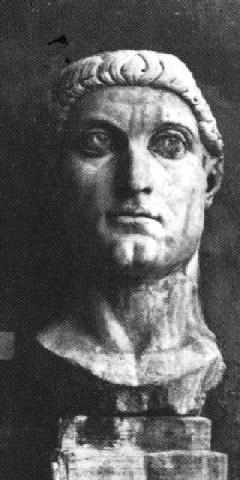

26 CONSTANTINE YANG AGUNG ±
250-337
Tokoh
ini Kaisar Romawi pertama yang memeluk Agama Nasrani. Lewat
masuk agama itu dan pelbagai cara pengembangan yang
ditempuhnya, dia memegang peranan menonjol dalam hal
mengubah Agama Nasrani dari agama yang diuber-uber dan
diancam hukuman menjadi agama yang dominan di Eropa.
Constantine dilahirkan kira-kira tahun 280 di kota
Naissus (sekarang bernama Nis) di negeri yang kini menjadi
Yugoslavia. Ayahnya seorang perwira tinggi, dan Constantine
menghabiskan masa mudanya di Nicomedia, tempat pengadilan
Kaisar Diocletian berada.
Diocletian naik tahta tahun 305 dan ayah Constantine
--Constantius--menjadi penguasa di paruh sebelah barat
Kekaisaran Romawi. Tatkala Constantius meninggal dunia di
tahun berikutnya, Constantine dinyatakan sebagai kaisar oleh
para prajuritnya. Tetapi, jendral-jendral lainnya saling
berselisih mengenai penobatan ini dan perang saudara pun
tidak bisa dielakkan lagi. Peperangan ini baru berakhir
tahun 312 tatkala Constantine dikalahkan oleh lawannya yang
masih bertahan --Maxentius-- dalam suatu pertempuran di
jembatan Milvian dekat kota Roma.
Tak bisa dipastikan kapan Constantine masuk Agama
Nasrani. Cerita-cerita yang lazim terdengar bilang, pada
saat-saat menjelang pertempuran di jembatan Milvian,
Constantine melihat salib menyala di langit dan bertuliskan
"Dengan tanda ini kau akan mampu menaklukkan." Tak peduli
kapan dia masuk Nasrani, Constantine berbuat banyak buat
kemajuan Agama Nasrani. Salah satu langkah pemulanya adalah
membuat Undang-Undang Milan. Dengan undang-undang ini Agama
Nasrani merupakan agama legal dan agama yang ditolerir.
Undang-undang itu juga memungkinkan kembalinya kekayaan
Gereja yang tadinya dirampas di masa penguberan dan
diobrak-abrik di masa lampau. Juga dinyatakan hari Minggu
sebagai hari beribadah.
Undang-undang Milan tidaklah didasarkan semata-mata oleh
sikap toleransi terhadap agama. Sebaliknya, pemerintah
Constantine dapat dianggap sebagai tanda bermulanya
penindasan terhadap orang-orang Yahudi yang terus
berlangsung di Eropa yang Kristen di abad-abad
mendatang.
Constantine tidak pernah menjadikan agama Nasrani sebagai
agama resmi negara. Tetapi, lewat peraturan dan
langkah-langkah politiknya dia jelas pendorong perkembangan
agama ini. Di masa pemerintahannya jelas sekali, barangsiapa
yang masuk Nasrani berarti pintu terbuka baginya dalam hal
kemudahan naik jenjang dalam karier pemerintahan. Dan
keputusan-keputusan yang dikeluarkan Constantine juga
memberikan kekebalan dan hak-hak istimewa bagi pihak gereja.
Begitu pula dia membangun gereja-gereja yang termasyhur di
dunia --seperti gereja kelahiran Isa di Bethlehem dan gereja
Makam Isa di Darussalam. Kesemua gereja ini mulai dibangun
pada saat pemerintahan Constantine.
Peranan Constantine selaku Kaisar Romawi yang beragama
Nasrani dengan sendirinya membuat dia berhak tercantum di
dalam daftar urutan buku ini. Tetapi, beberapa tindakannya
mengandung akibat-akibat berjangka jauh. Misalnya, dia
memugar dan memperluas kota Byzantium, dan diganti dengan
nama Constantinople (sekarang bernama Istambul) merupakan
salah satu kota terbesar di dunia dan tetap jadi ibukota
Kekaisaran Romawi Timur sampai tahun 1453 dan beberapa abad
kemudian menjadi ibukota kekaisaran Ottoman.
Constantine memainkan pula peranan penting dalam sejarah
internal gereja. Melibatkan diri dalam sengketa antara
pengikut-pengikut Arius dan Athonius (dua teolog Kristen
yang mengajukan doktrin berbeda), Constantine memanggil
rapat Dewan Nicola (di tahun 325), dewan persidangan gereja
pertama. Dewan tempat Constantine ambil bagian dengan aktif,
dapat memecahkan persengketaan itu dengan diterima Doktrin
Nicene, yang kemudian menjadi doktrin gereja yang
ortodoks.
Hal penting lain adalah peranannya dalam hubungan
penyusunan peraturan-peraturan sipil. Constantine membuat
perundang-undangan yang mengatur perusahaan-perusahaan
turun-temurun (seperti Joqal, tukang roti). Dikeluarkannya
pula dekrit yang isinya mengatur "coloni" (kelas petani
penggarap) dilarang meninggalkan tanah garapannya. Dalam
pengertian modern dekrit ini berarti merubah "coloni"
(petani penggarap) menjadi budak, yang terikat dengan
tanahnya. Dekrit ini dan lain-lain aturan merupakan peletak
dasar dari seluruh struktur sosial di jaman pertengahan
Eropa.
Constatine tidak dibaptis sampai ia terbaring di tempat
tidur dalam keadaan sekarat, walaupun jelas dia sudah masuk
Agama Nasrani jauh sebelum itu. Tetapi, berbarengan dengan
itu juga benar bahwa jiwa kenasraniannya sudah luntur
sepenuhnya. Walau dengan ukuran saat itu, dia begitu
beringas dan kejam. Sikap ini bukan tertuju kepada
lawan-lawannya semata. Oleh sebab-sebab yang kurang jelas,
dia menghukum istri serta anak lelakinya pada tahun 326.
Bisa dipersoalkan, penerimaan Constantine terhadap Agama
Nasrani sebelumnya tidaklah mengubah jalannya sejarah,
tetapi sekedar mengabsahkan hal-hal yang memang tak bisa
terelakkan. Selain itu, meski Kaisar Biocletian (memerintah
dari tahun 284-305) telah melakukan gencetan yang hebat
terhadap Agama Nasrani, usahanya membuat agama itu tidak
berhasil karena saat itu Agama Nasrani jauh lebih kuat dari
kekuatan yang akan menghantamnya walau dengan tindak kejam
bagaimanapun. Tarolah orang menganggap kegagalan percobaan
Biocletian menumpas habis Agama Nasrani dan agama itu bisa
meraih kemenangan meskipun tanpa ikut campur Constantine
samasekali. Anggapan dan spekulasi seperti itu memang
menarik, tetapi tidak meyakinkan dan tidak pasti. Sulit
sekali dibayangkan apa yang akan terjadi tanpa Constantine.
Amatlah jelas, dengan dorongannya, Agama Nasrani menyebar
luas baik dari ukuran jumlah maupun daerah berikut pengaruh.
Dari sekelompok kecil yang tak berarti hanya dalam jangka
waktu satu abad menjadi agama yang mapan dan punya pengaruh
besar di dunia.
Teranglah sudah, Constantine merupakan tokoh poros dalam
sejarah Eropa. Tempatnya dalam urutan daftar lebih tinggi
ketimbang tokoh-tokoh Alexander Yang Agung, Napoleon dan
Hitler karena pengaruhnya yang punya jangkauan panjang.
Situs web
- http://www.newadvent.org/cathen/04295c.htm
- http://www.roman-emperors.org/conniei.htm
|